СП 385.1325800.2018 «Защита зданий и сооружений от прогрессирующего обрушения. П»
О документе: разработчики, утверждение, регистрация, ключевые слова
СВОД ПРАВИЛ
СП 385.1325800.2018
Издание официальное
Москва 2018
1 ИСПОЛНИТЕЛИ -Федеральное государственное бюджетное образовательное учреждение высшего образования «Юго-Западный государственный университет» (ФГБОУ ВО «ЮЗГУ»), Акционерное общество «Центральный научно-исследовательский и проектноэкспериментальный институт промышленных зданий и сооружений -ЦНИИПромзданий» (АО «ЦНИИПромзданий»), Закрытое акционерное общество Городской проектный институт жилых и общественных зданий (ЗАО «ГОРПРОЕКТ»), Акционерное общество «Московский научноисследовательский и проектный институт типологии, экспериментального проектирования» (АО МНИИТЭП), Общество с ограниченной ответственностью «Техрекон» (ООО «Техрекон»)
2 ВНЕСЕН Техническим комитетом по стандартизации ТК 465 «Строительство»
3 ПОДГОТОВЛЕН к утверждению Департаментом градостроительной деятельности и архитектуры Министерства строительства и жилищнокоммунального хозяйства Российской Федерации (Минстрой России)
4 УТВЕРЖДЕН приказом Министерства строительства и жилищнокоммунального хозяйства Российской Федерации от 5 июля 2018 г. № 393/пр и введен в действие с 6 января 2019 г.
5 ЗАРЕГИСТРИРОВАН Федеральным агентством по техническому регулированию и метрологии (Росстандарт)
6 ВВЕДЕН ВПЕРВЫЕ
В случае пересмотра (замены) или отмены настоящего свода правил соответствующее уведомление будет опубликовано в установленном порядке. Соответствующая информация, уведомление и тексты размещаются также в информационной системе общего пользования - на официальном сайте разработчика (Минстрой России) в сети Интернет
© Минстрой России, 2018
Настоящий нормативный документ не может быть полностью или частично воспроизведен, тиражирован и распространен в качестве официального издания на территории Российской Федерации без разрешения Минстроя России
УДК ОКС 21.120.25
Ключевые слова: здания и сооружения, прогрессирующее обрушение, защита, правила проектирования, расчетные модели, конструктивные решения
ИСПОЛНИТЕЛЬ:
Ректор ЮЗГУ С.Г. Емельянов
Руководитель разработки от ЮЗГУ
Зав. кафедрой уникальных зданий и сооружений В.И. Колчунов
Введение
Настоящий свод правил разработан с учетом обязательных требований, установленных в [1]-[3], и содержит основные положения, общие требования к расчету и проектированию защиты зданий и сооружений от прогрессирующего обрушения при аварийной расчетной ситуации.
Свод правил разработан авторским коллективом ФГБОУ ВО «ЮЗГУ» (руководитель темы - д-р техн. наук, проф. В.И. Колчунов ; д-р техн. наук, проф. Н.В. Федорова ; д-р техн. наук, проф. С.Г. Емельянов ; д-р техн. наук, проф. Вл.И. Колчунов ), ЗАО «ГОРПРОЕКТ» (д-р техн. наук, проф. В.И. Травуш ), АО «ЦНИИПромзданий» (руководитель темы - канд. техн. наук Н.Г. Келасьев ; д-р техн. наук, проф. Э.Н. Кодыш ; д-р техн. наук, проф. Н.Н. Трекин ), АО МНИИТЭП (инж. Г.И. Шапиро ), ООО «Техрекон» (инж. А.Г. Шапиро ).
1Область применения
2Нормативные ссылки
- В настоящем своде правил использованы нормативные ссылки на следующие документы:
ГОСТ 27751-2014 Надежность строительных конструкций и оснований. Основные положения
ГОСТ 31937-2011 Здания и сооружения. Правила обследования и мониторинга технического состояния
СП 15.13330.2012 «СНиП II-22-81* Каменные и армокаменные конструкции» (с изменениями № 1, № 2)
СП 16.13330.2017 «СНиП II-23-81* Стальные конструкции»
СП 20.13330.2016 «СНиП 2.01.07-85* Нагрузки и воздействия»
- СП 21.13330.2012 «СНиП 2.01.09-91 Здания и сооружения на подрабатываемых территориях и просадочных грунтах» (с изменением № 1)
СП 22.13330.2016 «СНиП 2.02.01-83* Основания зданий и сооружений»
СП 44.13330.2011 «СНиП 2.09.04-87* Административные и бытовые здания» (с изменением № 1)
СП 54.13330.2016 «СНиП 31-01-2003 Здания жилые многоквартирные»
СП 56.13330.2011 «СНиП 31-03-2001 Производственные здания» (с изменением № 1)
Правила проектирования. Основные положения
Protection of buildings and structures against progressive collapse. Design code. Basic statements
Дата введения - 2019-01-06
СП 63.13330.2012 «СНиП 52-01-2003 Бетонные и железобетонные конструкции. Основные положения» (с изменениями № 1, № 2, № 3)
СП 64.13330.2017 «СНиП II-25-80 Деревянные конструкции» (с изменением № 1)
СП 116.13330.2012 «СНиП 22-02-2003 Инженерная защита территорий, зданий и сооружений от опасных геологических процессов. Основные положения»
СП 128.13330.2016 «СНиП 2.03.06-85 Алюминиевые конструкции»
СП 266.1325800.2016 Конструкции сталежелезобетонные. Правила проектирования
СП 296.1325800.2017 Здания и сооружения. Особые воздействия
Примечание - При пользовании настоящим сводом правил целесообразно проверить действие ссылочных документов в информационной системе общего пользования -на официальном сайте федерального органа исполнительной власти в сфере стандартизации в сети Интернет или по ежегодному информационному указателю «Национальные стандарты», который опубликован по состоянию на 1 января текущего года, и по выпускам ежемесячного информационного указателя «Национальные стандарты» за текущий год. Если заменен ссылочный документ, на который дана недатированная ссылка, то рекомендуется использовать действующую версию этого документа с учетом всех внесенных в данную версию изменений. Если заменен ссылочный документ, на который дана датированная ссылка, то рекомендуется использовать версию этого документа с указанным выше годом утверждения (принятия). Если после утверждения настоящего свода правил в ссылочный документ, на который дана датированная ссылка, внесено изменение, затрагивающее положение, на которое дана ссылка, то это положение рекомендуется применять без учета данного изменения. Если ссылочный документ отменен без замены, то положение, в котором дана ссылка на него, рекомендуется применять в части, не затрагивающей эту ссылку. Сведения о действии сводов правил целесообразно проверить в Федеральном информационном фонде стандартов.
3Термины и определения
В настоящем своде правил применены термины по [1], ГОСТ 27751, а также следующие термины с соответствующими определениями:
- 3.1аварийные воздействия
- Непредусмотренные нормальной эксплуатацией воздействия, характеризуемые малой вероятностью возникновения за время расчетного срока службы зданий и сооружений, которые могут вызвать потерю несущей способности несущих конструктивных элементов.
- 3.2аутригерные конструкции
- Пересекающиеся фермы, связи, диафрагмы или балки (балки-стенки), обеспечивающие повышенную жесткость этажа (пространства).
- 3.3вторичная расчетная схема
- Расчетная схема, полученная из первичной расчетной схемы путем исключения одного или нескольких несущих конструктивных элементов, расположенных в зоне локального разрушения.
- 3.4локальное разрушение
- Потеря несущей способности конструктивного элемента или группы несущих конструктивных элементов на ограниченной площади вследствие аварийного воздействия.
- 3.5особое предельное состояние
- Состояние конструкций, возникающее при аварийных воздействиях и расчетных ситуациях, превышение которого приводит к их разрушению.
- 3.6первичная расчетная схема
- Расчетная схема, принятая для условий нормальной эксплуатации здания или сооружения на основные сочетания нагрузок в соответствии с СП 20.13330.
- 3.7прогрессирующее (лавинообразное) обрушение
- Последовательное (цепное) разрушение несущих строительных конструкций, приводящее к обрушению всего сооружения или его частей вследствие локального разрушения.
- 3.8устойчивость против прогрессирующего обрушения
- Обеспечение несущей способности как конструктивной системы сооружения в целом, так и примыкающих к зоне локального разрушения конструктивных элементов.
4Общие требования
, (4.1) где F -усилия в конструктивных элементах или их соединениях, определяемые расчетом;
S - несущая способность конструктивных элементов и их соединений, определяемая с учетом указаний раздела 5.
Конструкции, для которых требования по несущей способности не удовлетворяются, необходимо усилить, либо следует принять другие меры, повышающие сопротивление конструкций прогрессирующему обрушению.
- пересекающихся стен на участках от места их пересечения (в частности, от угла здания) до ближайшего проема в каждой стене или до следующего вертикального стыка со стеной другого направления или на участке указанного размера (при размещении центра круга в месте пересечения стен);
- отдельно стоящей стены от края до ближайшего проема или на участке указанного размера (при размещении центра круга в центре тяжести сечения стены);
- колонн (пилонов), ядер жесткости или колонн (пилонов) с примыкающими к ним участками стен, расположенных на участке указанного размера [при размещении центра круга в центре тяжести сечения одной из колонн (пилона)].
В одноэтажных производственных зданиях следует рассматривать разрушение или удаление несущей конструкции на участке двух смежных шагов в однопролетных зданиях и смежных пролетах многопролетных зданий.
Для большепролетных зданий и сооружений в качестве локального разрушения следует рассматривать разрушение (удаление) одного из несущих элементов, в других случаях - согласно заданию на проектирование в зависимости от типа сооружения, но не менее одного из несущих элементов.
Зона локального разрушения может располагаться в любом месте сооружения и не должна приводить к прогрессирующему обрушению всего сооружения.
Для оценки устойчивости зданий и сооружений против прогрессирующего обрушения следует рассматривать наиболее опасные локальные разрушения.
- при разработке архитектурно-планировочных решений следует учитывать возможность возникновения локального разрушения в результате аварийного воздействия;
- в многоэтажных зданиях и сооружениях применяют конструктивные меры, повышающие степень статической неопределимости конструкции
(повышение неразрезности конструкции, уменьшение числа шарнирных соединений и пр.);
- применяют материалы и конструктивные решения, обеспечивающие развитие в конструктивных элементах и их соединениях пластических деформаций.
5Строительные материалы и их характеристики при расчете сооружений на устойчивость против прогрессирующего обрушения
6Нагрузки и воздействия
1,1 γ = n - для зданий высотой от 75 до 200 м или пролетом от 50 до 120 м или с консольными конструкциями с вылетом от 10 до 20 м;
1,2 γ = n - для зданий высотой более 200 м или пролетом более 120 м или с консольными конструкциями с вылетом более 20 м.
7Требования к расчетным моделям
СП 385.1325800.2018 являются ненесущими (например, навесные наружные стеновые панели, парапеты, железобетонные ограждения балконов, перегородки и т. п.), а при локальном разрушении сооружения активно участвуют в перераспределении усилий в элементах конструктивной системы.
8Конструктивные мероприятия по защите зданий и сооружений различных конструктивных систем от прогрессирующего обрушения
- обеспечение необходимой несущей способности конструктивных элементов и соединений между ними при аварийном особом воздействии, приводящем к локальному разрушению;
- обеспечение развития пластических деформаций в соединениях конструктивных элементов;
- обеспечение в шпоночных соединениях прочности отдельных шпонок на срез в 1,5 раза выше их прочности на смятие;
- обеспечение в болтовых соединениях прочности отдельных болтов на срез в 1,1 раза выше их прочности на смятие;
- обеспечение пластичной работы сварных соединений в предельном состоянии в соответствии с СП 16.13330 и СП 266.1325800;
- обеспечение достаточности длины зон анкеровки арматуры при ее работе как связи сдвига и растяжения в соответствии с СП 63.13330 и СП 266.1325800;
- обеспечение в сечениях надпроемных перемычек, балок, ригелей, плит в предельном состоянии разрушения по изгибу, а не по срезу.
- обеспечение восприятия вертикальными связями между низом колонн (пилонов, стен) и перекрытиями (балками, ригелями) растягивающих усилий, определенных в результате расчетов, но не менее 10 кН (1 тс) на м² грузовой площади этой колонны (пилона, стены);
- покрытие и перекрытия следует связывать с колоннами (пилонами, стенами, балками, ригелями) расчетными связями;
- минимальную площадь сечения горизонтальной арматуры (суммарной для нижней и верхней арматуры) в монолитных железобетонных перекрытиях и покрытиях, как в продольном, так и в поперечном направлении, следует принимать не менее 0,25 % площади сечения бетона. При этом необходимо обеспечить непрерывность указанной арматуры и стыковку (в том числе при возможном изменении расчетной схемы работы перекрытия или покрытия в результате локального разрушения) в соответствии с требованиями действующих нормативных документов.
- горизонтальные в продольном и поперечном направлениях связи между плитами перекрытий и покрытия, обеспечивающие необходимую прочность дисков перекрытий и покрытия при растяжении и сдвиге (см. приложение Ж, рисунок Ж.2). При этом связи следует проектировать на восприятие усилий, определенных в соответствии с результатами расчетов, но не менее 15 кН (1,5 тс) на 1 м ширины здания и 10 кН (1,0 тс) на 1 м длины здания [для зданий башенного типа - не менее 10 кН (1 тс) на 1 м размера здания в плане]. Расстояние между связями следует назначать не более 3,0 м;
- вертикальные (междуэтажные) связи между несущими стеновыми панелями, обеспечивающие необходимую прочность горизонтальных стыков стен и перекрытий при растяжении и сдвиге (см. приложение Ж, рисунок Ж.3). Следует устанавливать не менее двух указанных связей на стеновую панель. При этом если внутренняя стена состоит из нескольких стеновых панелей,
СП 385.1325800.2018 объединенных в их вертикальном стыке вертикальными связями, то требуется установка не менее двух связей на внутреннюю стену. Указанные связи следует проектировать на восприятие усилий, определенных в соответствии с результатами расчетов, но не менее 25 кН (2,5 тс) на 1 м длины стеновой панели;
- горизонтальные связи между навесными наружными стеновыми панелями (поверху) и внутренними стеновыми панелями, вертикальные связи между навесными наружными стеновыми панелями (понизу) и плитами перекрытий, совместно обеспечивающие устойчивость положения наружных стеновых панелей и включение их в работу при локальном разрушении. Для одномодульных наружных стеновых панелей требуется установка четырех связей - две с плитами перекрытия, две с внутренними стеновыми панелями). Для двухмодульных наружных стеновых панелей требуется установка восьми связей - четыре с плитами перекрытия (по две на модуль) и четыре с внутренними стеновыми панелями. При этом связи следует проектировать на восприятие усилий, определенных в соответствии с результатами расчетов, но не менее 10 кН (1,0 тс) на 1 м длины наружной стеновой панели;
- лестничные марши и площадки следует связывать с вертикальными элементами, покрытием или перекрытием расчетными связями;
- предусматривать участки (скрытые балки), запроектированные в соответствии с требованиями по степени огнестойкости, предъявляемыми к несущим конструкциям. Эти участки, имеющие арматуру, расположенную с увеличенным защитным слоем, соединяют вертикальные несущие конструкции и обеспечивают устойчивость здания при защите от прогрессирующего обрушения. Количество и места расположения арматуры определяются расчетом. В случае применения сборных плит перекрытия, в которых нет такой арматуры, необходимо устраивать специальные монолитные участки (см. приложение Ж, рисунок Ж.4).
- на каждом этаже по периметру здания следует устраивать пояс армированной кладки между верхом надпроемных перемычек и низом перекрытия. Если низ перекрытия совпадает с верхом надпроемных перемычек, то перемычки необходимо выполнять монолитными железобетонными и непрерывными по всему контуру наружных или внутренних стен, т. е. необходимо устраивать непрерывный монолитный железобетонный пояс по типу антисейсмического (см. приложение Ж, рисунки Ж.5, Ж.6). Требуемую площадь арматуры кладки и монолитного пояса следует определять расчетом;
- толщину внутренних несущих кирпичных стен и внутреннего слоя несущих наружных стен следует принимать по расчету, но не менее 380 мм;
- следует предусматривать горизонтальные в продольном и поперечном направлениях связи между плитами перекрытий и покрытия, обеспечивающие необходимую прочность дисков перекрытий и покрытия при растяжении и сдвиге (см. приложение Ж, рисунок Ж.2). При этом связи следует проектировать на восприятие усилий, определенных в соответствии с результатами расчетов, по требованиям СП 15.13330, но не менее усилий, приведенных в 8.3;
- в перекрытиях следует предусматривать устройство скрытых балок и установку дополнительной арматуры в плитах перекрытия (см. приложение Ж, рисунок Ж.4).
- при проектировании стальных конструкций следует исключить возможность хрупкого разрушения конструктивных элементов и их узлов с соблюдением требований, изложенных в СП 16.13330, для исключения сочетания неблагоприятных факторов;
- для обеспечения пластичной работы конструктивной системы следует применять малоуглеродистые и низколегированные стали с относительным удлинением не менее 20 %;
- для повышения пространственной жесткости и устойчивости к прогрессирующему обрушению конструкций со стальным каркасом следует предусматривать эффективную систему связей. Связи должны быть запроектированы таким образом, чтобы они не выключались из работы и допускали без разрушения развитие необходимых деформаций для перераспределения силовых потоков после локального разрушения одного из несущих элементов.
- конструктивную систему большепролетного здания следует проектировать с альтернативными путями передачи силовых потоков в сооружении, с учетом возможного удаления одного из несущих конструктивных элементов и обеспечением локализации зоны возможного разрушения конструктивной системы;
- необходимо предусматривать усиление вертикальных и горизонтальных несущих конструктивных элементов сооружения для обеспечения восприятия и перераспределения возможных аварийных воздействий;
- выбор защиты сооружений от прогрессирующего обрушения следует выполнять с учетом разработки экономичных конструктивных решений.
АПриложение А. Дополнительные коэффициенты условий работы при расчете на устойчивость против прогрессирующего обрушения
А.1 Нормативные характеристики сопротивления материалов для бетонных и железобетонных конструкций при обеспечении требуемого уровня контроля качества, установленного действующими нормативными документами, в случае расчета на устойчивость против прогрессирующего обрушения следует умножать на дополнительный коэффициент условий работы особого предельного состояния, принимаемый равным 1,15. Интенсивный рост прочности бетона после возведения здания (за первый период в течение 3 мес) необходимо учитывать дополнительным коэффициентом условия работы особого предельного состояния, равным 1,25.
А.2 Нормативные характеристики сопротивления прокатной стали следует принимать по СП 16.13330 с учетом допустимости работы пластичных сталей за пределом текучести. Коэффициент условий работы особого предельного состояния для пластичных сталей с пределом текучести в соответствии с СП 296.1325800 следует принимать равным 1,1.
БПриложение Б. Алгоритм расчета на устойчивость против прогрессирующего обрушения в квазистатической и динамической постановках
Расчетный анализ на устойчивость против прогрессирующего обрушения выполняется в квазистатической или динамической постановке и должен включать следующие процедуры:
- по принятым на начальной стадии в соответствии с положениями 7.2 и 7.5 первичной (рисунок Б.1, а) и вторичной (рисунок Б.1, б) расчетным схемам определяется напряженно-деформированное состояние в элементах конструктивной системы при условиях нормальной эксплуатации;
- в первичной расчетной схеме выключается один из вертикальных или горизонтальных несущих элементов (сечений) и строятся вторичные расчетные схемы с исключенным элементом первого (рисунок Б.1, в) и второго уровня (рисунок Б.1, г). При этом нагрузки во вторичной расчетной схеме принимают в соответствии с разделом 6. Мгновенное удаление выключаемого элемента моделируется усилиями, определенными в этом элементе при расчете по первичной расчетной схеме, прикладываемыми во вторичной расчетной схеме с обратным знаком. В случае если при всех возможных сценариях особого аварийного воздействия (удаления одного из конструктивных элементов) догружение конструктивной системы сооружения носит постепенный статический характер, например осадка основания при замачивании, вызванном прорывом коммуникаций (учитываемая согласно СП 296.1325800, СП 21.13330, СП 116.13330), усилия, действовавшие в выключаемом элементе при расчете по первичной расчетной схеме, во вторичной расчетной схеме допускается принимать равными нулю;
- проводят расчет конструктивной системы с удаленным элементом по вторичной расчетной схеме и определяют напряженно-деформированное состояние в элементах конструктивной системы, возникающее при локальном разрушении (выключении несущего элемента);
- с учетом требований, изложенных в приложении Е, проводят критериальную проверку несущей способности элементов конструктивной системы для особого предельного состояния конструкций по нормальным и наклонным сечениям, а также для узлов сопряжения элементов конструктивной системы между собой. В случае, указанном в приложении Е (при больших прогибах), следует рассматривать работу перекрытий над удаленной колонной (пилоном, стеной) как работу элементов висячей системы. При этом должна быть конструктивно обеспечена возможность восприятия возникающих горизонтальных усилий;
Рисунок Б.1 -Первичная расчетная схема первого (а) и второго (б) уровня, вторичная расчетная схема первого (в) и второго (г) уровня
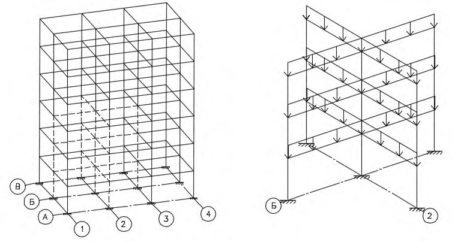
- если в процессе критериальной проверки условие прочности в какихлибо сечениях (узлах, связях) не выполняется, то проводят корректировку вторичной расчетной схемы, в которой исключаются эти сечения, проводят перерасчет конструктивной системы и вновь проверяют условия прочности сечений (узлов, связей);
- если не происходит сходимость итерационного процесса, то нарушается условие прочности, и наступает прогрессирующее обрушение.
ВПриложение В. Алгоритм расчета на устойчивость против прогрессирующего обрушения кинематическим методом теории предельного равновесия
Расчет при каждой выбранной расчетной схеме выполняют следующим образом:
- задают наиболее вероятные механизмы разрушения элементов сооружения, потерявших опору (задать механизм разрушения - означает определить все разрушаемые связи, в том числе и образовавшиеся пластические шарниры, и найти возможные обобщенные перемещения wi по направлению усилий в этих связях); наиболее вероятному механизму разрушения соответствует минимум потенциальной энергии конструкции на возможных (обобщенных) перемещениях;
- для каждого из выбранных механизмов разрушения следует определить предельные усилия, которые могут быть восприняты сечениями всех пластично разрушаемых элементов и связей Si , в том числе и пластических шарниров;
- находятся равнодействующие Gi внешних сил, приложенных к отдельным звеньям механизма, то есть к отдельным неразрушаемым элементам или их частям, и перемещения по направлению их действия ui ;
- определяют работы внутренних сил W и внешних нагрузок U на возможных перемещениях рассматриваемого механизма:
- проверяют условие равновесия
Если при какой-либо расчетной схеме условие равновесия не выполняется, то следует провести усиление конструктивных элементов, либо с помощью иных мероприятий (например, учесть работу ненесущих элементов в расчетной схеме) добиться выполнения условия равновесия.
Кроме того, в несущих вертикальных элементах, не расположенных над зоной локального разрушения, воздействие от локального разрушения приводит к увеличению напряжений и усилий. Необходимо выполнить проверку несущей способности этих элементов.
ГПриложение Г. Дополнительные конструктивные мероприятия для одноэтажных каркасов зданий
- Г.1 По всем продольным рядам колонн устанавливают, при необходимости, неразрезные подстропильные конструкции (рисунок Г.1 а, б), обеспечивающие перераспределение усилий после локального разрушения одного из несущих элементов каркаса.
- Г.2. В несущую систему устанавливают, при необходимости, связи, которые обеспечивают устойчивость всей системы, в количестве не менее одной в каждом пролете, обеспечивающие устойчивость положения строительных конструкций и включение в работу диска всего покрытия.
1 колонна; 2 - стропильная конструкция; 3 подстропильная конструкция; 4 связевая ферма в вертикальной плоскости из плоскости стропильной конструкции; ① -⑥ , Ⓐ -Ⓑ -координатные оси здания; b - шаг колонн; L пролет
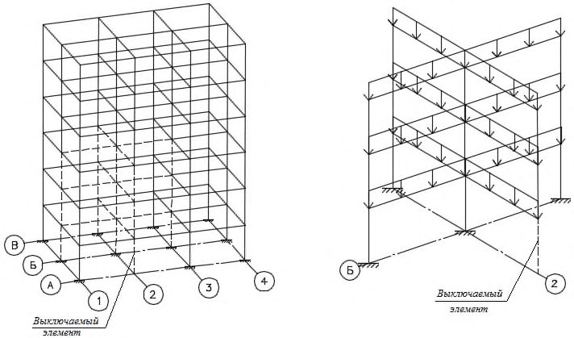
Рисунок Г.1 Схема расположения подстропильных конструкций и связей в одноэтажном здании: пространственная схема каркаса (а) и план здания (б)
Г.3 Проектируют узлы и соединения элементов покрытия и резервируют их прочность таким образом, чтобы в случае локального разрушения одного из элементов каркаса здания были обеспечены включение в работу пространственной системы несущих элементов и исключение их прогрессирующего обрушения.
ДПриложение Д. Дополнительные конструктивные мероприятия для многоэтажных каркасов зданий
Д.1 Устанавливают, при необходимости, внутренние связи в уровне каждого перекрытия или покрытия в двух взаимно перпендикулярных направлениях, обеспечивающих несущую способность дисков перекрытий при растяжении и сдвиге и работающих на всей длине (рисунок Д.1).
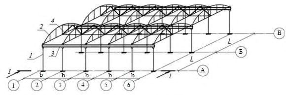
1 - связи по угловым колоннам; 2 - контурные связи; 3 - внутренние связи; 4 -вертикальные связи; 5 - горизонтальные связи по внешним колоннам или стенам
Рисунок Д.1 - Возможная схема расположения связей в многоэтажном каркасном здании
Д.2 Устанавливают контурные периферийные связи на расстоянии не более чем 1,2 м от края в каждом перекрытии или покрытии. Этими связями следует обеспечивать несущую способность дисков перекрытий и покрытий при растяжении и сдвиге. Связи следует проектировать на основании расчета на восприятие растягивающих усилий одной связью не менее 10 кН на 1 пог. м контура здания.
Д.3. Устанавливают горизонтальные связи по наружным колоннам или стенам в пределах перекрытий и покрытия. Этими связями следует обеспечивать восприятие усилий растяжения не менее 20 кН на 1 пог. м фасада здания.
Д.4 Устанавливают вертикальные связи, которые связывают колонны каркасного здания или сооружения на всю его высоту. Эти связи следует рассчитывать на растягивающее усилие, равное значению осевой продольной силы, которая действует в колонне любого из этажей при основных сочетаниях нагрузок. Стыковку связей не допускается выполнять в опорных узлах и середине высоты колонны. Их рекомендуется выполнять на 1/3-1/4 высоты этажа.
Д.5 Для обеспечения объединения балок с перекрытием расчетными связями (например, для сталежелезобетонного перекрытия) следует предусмотреть объединение стальных балок с монолитным перекрытием с помощью стад-болтов или специальных упоров в соответствии с требованиями СП 266.1325800.
Д.6 Обеспечивают жесткое сопряжение балок с колоннами минимум одного направления.
Д.7 Вводят в несущую систему многоэтажного здания или сооружения аутригерные конструкции (рисунок Д.2, а) в виде систем перекрестных сплошных или сквозных ферм (рисунок Д.2, б, в), рассчитанных на восприятие усилий, определяемых в соответствии с результатами расчетов по первичной и вторичной расчетным схемам.
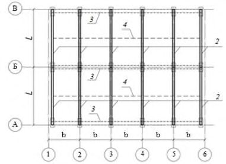
1 - ядро жесткости; 2 - колонны; 3 - ригели; 4 - аутригерная конструкция
Рисунок Д.2 -Схема расположения аутригерных конструкций (а) и типы этих конструкций сплошного (б) или сквозного (в) сечения
ЕПриложение Е. Критерии несущей способности конструкций для особого предельного состояния
При расчете зданий и сооружений на устойчивость против прогрессирующего обрушения критерии несущей способности при соответствующем обосновании допускается формировать, как для особого предельного состояния.
В качестве критериев особого предельного состояния в рассматриваемом расчетном сечении конструкции следует принимать:
- ограничение деформаций сжатого бетона предельными значениями ε𝑏2 , определяемыми по билинейной диаграмме состояний при его кратковременном деформировании (рисунок Е.1) и значениях напряжений, равных φ Rbser . Значение деформаций сжатия тяжелого, мелкозернистого и напрягающегося бетонов следует принимать 0,0035. При этом допускается учитывать увеличение прочности бетона при динамическом нагружении коэффициентом φ𝑏 , равным 1,15. При пластическом характере разрушения сечения (из-за текучести арматуры) значение φ𝑏 принимают равным единице;
- ограничение деформаций растянутой арматуры предельными значениями относительных деформаций ε𝑠2 , принимаемыми для стали с физическим пределом текучести равными 0,025, а для стали с условным пределом текучести - 0,015. При этом в обоих случаях значения напряжений принимают равными Rsser . Коэффициент увеличения динамической прочности арматуры φ𝑠 принимают равным единице;
- для стальных конструкций относительные предельные деформации сталей с физическим пределом текучести принимают равными 0,025, а для сталей с условным пределом текучести - 0,010.
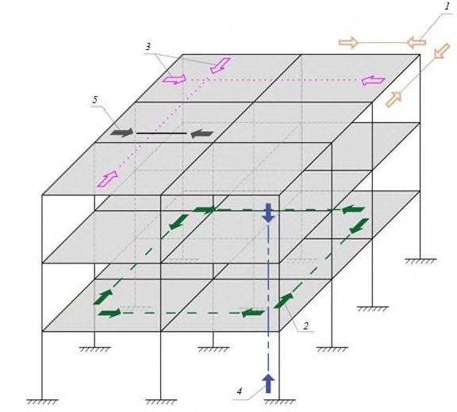
Ebred - модуль деформации бетона; Es - модуль деформации арматуры; ε b - деформации бетона; ε s - деформации арматуры; σ b - напряжения бетона; σ s - напряжения арматуры
Рисунок Е.1 - Диаграммы для определения предельных деформаций бетона (а) и арматуры (б) для особого предельного состояния
В случае если критерий несущей способности по сжатому бетону для рассматриваемого конструктивного элемента на участке длиной больше, чем 1/3 пролета, не выполняется для трех и более сечений, а критерий для растянутой арматуры в этих сечениях удовлетворяется, допускается работу перекрытий над удаленным вертикальным элементом (колонной, пилоном, стеной) рассматривать как работу элементов висячей системы. При этом должны быть выполнены критерии обеспечения анкеровки арматуры и восприятия усилий распора.
При проверке несущей способности элементов конструктивной системы по вторичной расчетной схеме кроме прочности должна быть обеспечена устойчивость всех элементов. При этом в зависимости от материала конструкций используют критерии СП 16.13330 и СП 63.13330.
Прогибы изгибаемых элементов конструктивной системы для особого предельного состояния при условии обеспечения минимально допустимой длины зоны опирания во всех случаях не должны превышать 1/50 длины пролета.
ЖПриложение Ж. Возможные варианты конструктивных решений связей в крупнопанельных, кирпичных и комбинированных конструкциях зданий и сооружений
Установка системы связей в крупнопанельных, кирпичных и комбинированных конструкциях зданий и сооружений в общем случае может быть выполнена по схеме, приведенной на рисунке Ж.1.
Горизонтальные связи (рисунок Ж.2) следует проектировать на восприятие
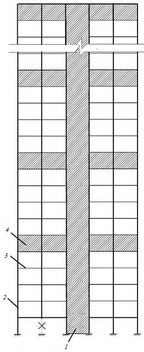
1 - связь между панелями наружных и внутренних стен; 2 - связь между продольными наружными несущими стенами; 3 - связь между продольными внутренними стенами; 4 -связь между поперечными и продольными внутренними стенами; 5 - связь между наружными стенами и плитами перекрытий; 6 - связь между плитами перекрытий вдоль длины здания; 7 - связь между плитами перекрытий поперек длины здания
Рисунок Ж.1 - Схема расположения связей в крупнопанельном здании
Рисунок Ж.2 - Варианты соединения плит перекрытия с ригелями (а) и между собой (б)
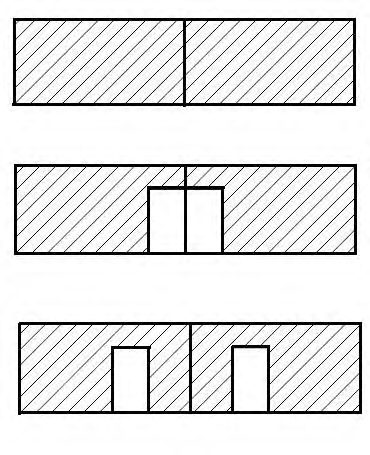
усилий, определенных в соответствии с результатами расчетов, но не менее 15 кН (1,5 тс) на 1 м ширины здания и 10 кН (1,0 тс) на 1 м длины здания [для зданий башенного типа не менее 10 кН (1 тс) на 1 м размера здания в плане]. Расстояние между связями следует назначать не более 3,0 м.
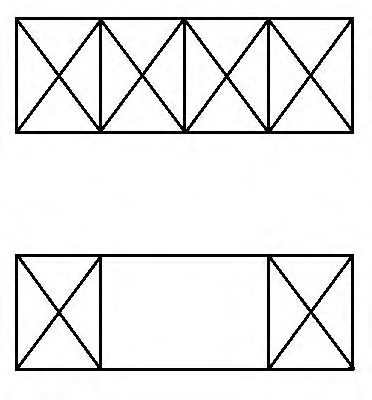
1 -вертикальная связь; 2 внутренняя стеновая панель; 3 плита перекрытия; 4 направление расположения наружной стены
Рисунок Ж.3 - Вариант вертикальных (междуэтажных) связей между несущими стеновыми панелями
Вертикальные связи (рисунок Ж.3) следует устанавливать не менее двух на стеновую панель. При этом если внутренняя стена состоит из нескольких стеновых панелей, объединенных в их вертикальном стыке вертикальными связями, то требуется установка не менее двух связей на внутреннюю стену. Указанные связи следует проектировать на восприятие усилий, определенных в соответствии с результатами расчетов, но не менее 25 кН (2,5 тс) на 1 м длины стеновой панели.
1 - бетон; 2 - арматура
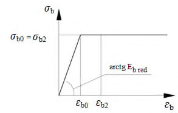
Рисунок Ж.4 - Варианты укладки дополнительной арматуры с увеличенным защитным слоем в монолитных участках при монтаже (а), плитах перекрытия при изготовлении (б) и замоноличенных пустотах плит перекрытия (в)
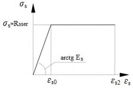
а, б - армокирпичные пояса; в, г, д, е - железобетонные пояса
Рисунок Ж.5 -Варианты устройства армированных поясов и анкеровки плит перекрытия
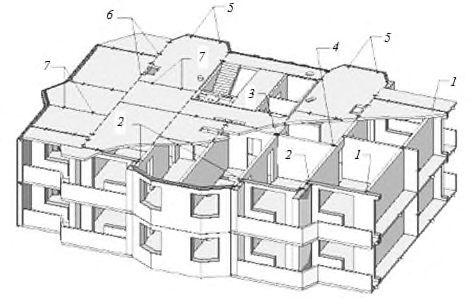
а - каркас железобетонного пояса под торцом панели; б - каркас у торца панели с анкером; в - каркас под торцом и у торца панели с анкером; 1 - анкер; 2 - каркасы для железобетонных поясов
Рисунок Ж.6 - Варианты анкеровки панелей перекрытий
ИПриложение И. Классификация зданий и сооружений по требованиям к защите зданий и сооружений от прогрессирующего обрушения
| Уровень ответственности | Требования к защите | Перечень объектов по уровню ответственности |
|---|---|---|
| 1 Повышенный | 1 Расчетная проверка с использованием пространственных расчетных схем по первому предельному состоянию с удалением одного из несущих элементов (см. раздел 7), с учетом нормативных характеристик материалов конструкций, физической, геометрической и конструктивной нелинейности. 2 По требованию заказчика в задании на проектирование (в дополнение к необходимым требованиям по несущей способности) могут быть установлены дополнительные требования по обеспечению трещиностойкости и деформативности конструкций сооружения при локальном разрушении | Перечень (или классификация) особо опасных, технически сложных и уникальных объектов установленный [3, статья 48.1] (за исключением сооружений, не входящих в область применения настоящего свода правил) |
| 2 Нормальный | Расчетная проверка зданий и сооружений по пространственным расчетным схемам по первому предельному состоянию с удалением одного из несущих элементов (см. раздел 7), с учетом нормативных характеристик материалов конструкций, физической, геометрической и конструктивной нелинейности | Все сооружения, при проектировании и строительстве которых используются принципиально новые конструктивные решения и технологии, которые не прошли проверку в практике строительства и эксплуатации. Перечень других зданий принимают в соответствии с положениями ГОСТ 27751, за исключением указанных в пункте 1 настоящей таблицы |
| 3 Пониженный | Нет требований | Здания и сооружения, не перечисленные выше |
Примечания
1 По требованию заказчика в задании на проектирование (в дополнение к необходимым требованиям по несущей способности) могут быть установлены дополнительные требования, например по обеспечению трещиностойкости и/или деформативности конструкций сооружения при локальном разрушении.
2 Для зданий и сооружений нормального уровня ответственности допускается не выполнять расчет и проектирование защиты от прогрессирующего обрушения в случаях, если их необходимость не указана в приложении И или нормативных документах, включенных в перечни, указанные в [1, статья 6, части 1, 7].
Библиография
- [1] Федеральный закон от 30 декабря 2009 г. № 384-ФЗ «Технический регламент о безопасности зданий и сооружений»
- [2] Федеральный закон от 27 декабря 2002 г. № 184-ФЗ «О техническом регулировании»
- [3] Федеральный закон от 22 декабря 2004 г. № 190-ФЗ «Градостроительный кодекс Российской Федерации»
- [4] Федеральный закон от 21 июля 1997 г. № 116-ФЗ «О промышленной безопасности опасных производственных объектов»